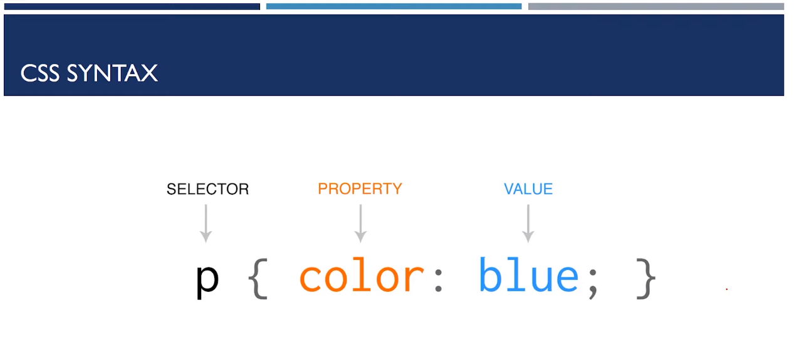
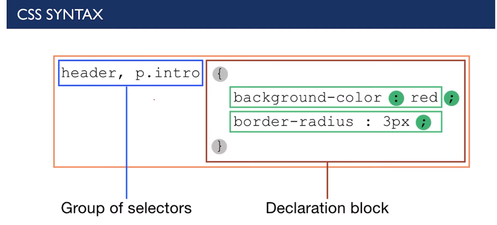

This is CSS Tutorial
- CSS gives style to raw HTML
- It stands for Cascading Style Sheets
- CSS is used to give style to our web pages
- CSS is used to make websites responsive
- CSS takes the responsibility of design in your websites
CSS includes all the things which can be used to design the raw
HTML from colouring the background and texts, to adjust the borders,
give padding, etc. Moreover, CSS helps in making websites responsive.
Responsive means that the site will behave accordingly to the different
screen sizes. For example, if you open a website on a desktop and then on your
mobile, you will find the difference between their displays. All the
components in a navigation bar will move into a hamburger icon if you open the website on mobile.
We can add styles in the HTML part itself, but I would rather recommend making a
new CSS file and then attach it to the HTML part. It is so because it is a professional
practice when different developers are working on a single website to keep the
skeleton of a website in one file and the styling in another file.
Role of CSS
- CSS is a style sheet language that is used to handle the presentation of the web page containing HTML.
- It makes our websites beautiful and modern looking.
The syntax of CSS is
P { color: blue; }

- P stands for the selector and it decides which part of the HTML the CSS will be applied. It states
where the CSS property is to be applied.
- Property is used to describe which property you want to change or add. Whether you have to change colour,
border, background, width, all these come under property.
- The last section is for defining the value. All the properties will be changed according to the value we
provide.
We can also target multiple properties at one time. The syntax is as follows
header, p.intro { background-color: red;
border-radius: 3px,
}

In the above example, we have changed the header tag and the paragraph tag with
a class intro to change the background colour to red and
border-radius to 3 pixels.
There are three ways to Add CSS-
Inline, Internal & External CSS
- Inline CSS- CSS is added to the elements directly using the style attributes.
- Internal CSS- CSS is kept inside the head tags in <style> tags
- External CSS- CSS is kept separately inside a .CSS style sheet. It involves two steps-
-
- First, write the CSS in.CSS file.
- Include that CSS file to Markup.